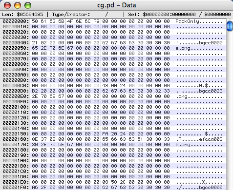
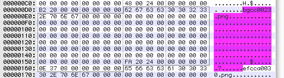
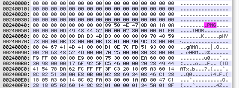

所以你想成为一名黑客？第二部分：十六进制编辑器
让我们开始吧。今天，我们将看一个简单的示例存档格式，作为讨论游戏数据文件“标准”部分的跳板。当您凝视未知格式时，请记住此类模板，这将有助于您理解遇到的随机字节。
目前，我们要看的游戏是Cross + Channel（试用版下载链接位于页面底部），该游戏的翻译项目正在进行中。因此，如有需要，请索取一份副本，让我们看看。
在内部，除了可执行文件等，我们只有几个文件：bgm.pd，cg.pd，script.pd，se.pd和voice.pd。这是非常典型的情况：大多数游戏并未在其自己的文件中附带每个声音片段和图像，而是将它们收集到几个数据存档中，游戏引擎可以随机访问这些存档。从这些档案中提取单独的文件是攻击游戏的第一步。
现在是时候启动黑客最喜欢的工具之一，即十六进制编辑器。这是一个相对简单的实用程序，它仅显示文件中的原始字节及其位置…更高级的功能通常包括解释通用数据格式（整数和浮点数等），比较文件以及特别是搜索所需文件的能力。模式。我个人使用Mac实用程序HexEdit。如果您有喜欢的Windows或Linux十六进制编辑器，请随时在评论中提及它，以供其他读者查看。
（更新：到目前为止，建议Windows使用的是WinHex，HView，XVI32，Hex Workshop以及组合的十六进制和文本编辑器UltraEdit-32。对于基于Unix的系统，已经提到了HexCurse。谢谢！）
那么文件是什么样的呢？这是cg.pd的开头，我们可以放心地假设其中包含游戏图像文件：

是的，看一下：可识别的文件名！（例如bgcc0000e.png。）如果看到类似这样的内容，而不是随机字节，则应该感到高兴。即使您还不完全清楚这意味着什么，也有一条通向进一步解释的明确途径。
为了帮助我们解释我们正在寻找的内容，是时候对“典型游戏档案”的内容进行简短的论述了。
- 标题
- 签名
通常，存档将以某种标识字符串开头，该字符串为存档格式和版本提供签名。您可以使用此方法来确保实用程序在正确的文件类型上运行。 - 索引位置在
大多数情况下，归档索引将立即开始，但是有时实际上将索引存储在文件末尾，因为归档打包程序直到之后才知道它的大小（如果索引本身就是索引）例如压缩的）。在这种情况下，将有一个指向索引位置的指针。
- 签名
- 索引
您要了解的关键结构是存档内容的索引，因为它告诉您如何获取其中包含的文件。- 索引大小
通常，索引将从大小值开始，通常只是索引中包含的文件数。不过，情况并非总是如此，因为有时索引会一直持续到命中特殊的结尾条目（例如，负文件大小或空文件名等）为止。 - 文件条目列表
接下来是存档中包含的各个文件的列表。根据文件名的处理方式，这可以是恒定长度或可变长度的数据结构。有时，文件路径也将具有层次结构，以表示内部的整个目录树。每个条目包含许多标准信息：- 文件名/文件路径：可以是一个以零结尾的字符串，或者有时会明确给出长度。信不信由你，文件名是可选的，因为我遇到了至少一种存储文件名哈希的情况。
- 位置：档案中文件开头的提示。偏移量可以是从存档的开头，索引的开头开始，有时也可以是存档中“文件区域”的开头（即，与第一个文件的内容开头的偏移量，或者等效于与文件末尾的偏移量）。索引）。
- 大小：文件的大小。由于有时可以从偏移量推断到下一个文件，因此有时会忽略掉它。其他时候，有两种不同的大小：文件的原始大小和存储在归档文件中的压缩大小。
- 标志：文件是否已压缩，如果已压缩，请使用什么算法？是否已加密，如果已加密，是否有要使用的密钥或初始化值？
- 校验和：为确保数据完整性，有时会给出文件的校验和。这对于黑客来说可能是非常烦人的，因为这意味着要修改存档，我们将需要对校验和算法进行逆向工程，以便能够为我们的新数据计算适当的值（或者禁用可执行文件中的检查）。
请注意，有时会分发此信息，例如，在索引结构中使用文件名指定文件位置，但是在该偏移量之前紧随文件数据本身给出文件大小和压缩标志。
- 索引大小
- 文件
然后，文件本身只是在存档中串联在一起，可能经过压缩和加密。游戏引擎知道从索引条目中找到它们的位置，因此它可以立即跳转到所需的位置。
好的，让我们从这个角度来看cg.pd。的仅包装从一开始的顺序对我来说就像是存档签名。然后只有一堆零字节，直到我们到达偏移量0×40，我们有了序列21 02 00 00 00 00 00 00 就在可识别的ASCII字符串文件名之前。
这可能是索引的大小吗？好吧，首先，我们如何解释这些字节？我们有几种选择：
- 随机标志字节。设置了三个位：第一个字节为0×20和0×01，第二个字节为0×02。并非没有道理，但也不是很有用。
- 小尾数整数。这里0×21是最低有效字节，0×02是下一个字节，依此类推。因此，实际整数值为0×0000000000000221，即十进制545。这可能是一个合理的索引大小。
- 大端整数。现在0×21是最重要的字节，下一个是0×02，整数值为0×21020000，即十进制553,779,200（我们甚至忽略了其他四个00）。这是不合理的，因为整个文件不是500MB。也许这只是一个16位整数：0×2102 = 8450，它可能适用于索引数组的字节大小。
让我们检查一下。扫描文件的开头，似乎文件名从偏移量0×48、0xD8、0×168、0×1F8、0×288等开始。这意味着每个文件名占用144个字节。最终文件名（TCYM0005c.png）从偏移量0×13248开始，这意味着可能存在（0×13248-0×00048）/ 144 +1 = 545个文件条目。
是的，545！所以对21 02 00 00 00 00 00 00作为一个小尾数整数，告诉我们有多少个文件条目可能是正确的。更重要的是，现在我们可以将注意力集中在这144个字节的区域上，因为每个区域都可能是一个文件条目。另外，我们知道我们的档案库喜欢小尾数整数，并且可能更喜欢8字节整数。
好的，让我们检查一下这些文件条目。但是（这是一个小技巧）不要看第一个。在第一个条目中，太多东西很可能为零，因此我们不确定要看什么。相反，让我们检查第二个条目，我们看到它从偏移量0xD8到0×167：

我们有一个文件名，很多零，看起来像另外两个8字节的little-endian整数。记住我们的典型游戏档案库的模板…我们正在寻找大小和位置信息，也许其中一些零也是标志字节，但是还没有办法知道。
现在，让我们假设所有零都是文件名数据结构的一部分：这恰好为它留出了128个字节，对于（懒惰的）程序员来说，这听起来很合理。然后剩余的信息是整数0×002420FA和0×0008370E。还不太确定如何构成这些……但是让我们得到更多的例子。前几个文件的数字是什么样的？
| 文件1 | 0×00240048 | 0×000020B2 |
| 文件2 | 0×002420FA | 0×0008370E |
| 文件3 | 0×002C5808 | 0×00002FA6 |
| 文件4 | 0×002C870E | 0×00063B8A |
| 文件5 | 0×0032C338 | 0×0006A7CB |
现在开始变得有意义：第一列中的数字总是越来越大，而且它们的数目总是正好与第二列中的数字一样大！这是偏移和大小变化的完美标志。
因此，如果我们的假设正确，则第一个文件bgcc0000e.png的长度应为0×000020B2 = 8370字节，并且可能应从档案中的偏移量0×00240048开始。我们并不完全确定这一点，因为偏移量可能正在计算或不计算签名或索引的大小，并且确实有点可疑，因为我们认为索引实际上以偏移量0×000132D7结尾。但是无论如何，让我们看一下，因为文件可能是乱序的：

尤里卡！我们已经猜对了，因为偏移量0×00240048处的右边是PNG文件的开始。不压缩，不加密。实际上，如果将接下来的8370个字节复制并粘贴到一个新文件中，然后在图形编辑器中打开它，则会得到640×480空白屏幕的回报。
嗯 好吧，游戏也需要白屏，至少尺寸是合理的。为了安全起见，让我们尝试下一张图像。抓取从偏移量0×002420FA开始的0×0008370E字节可得到：

好极了！胜利是我们的！
因此，让我们总结一下。我们认为.PD格式目前包括：
- 签名串 仅包装
- 56个字节的零
- 8字节小字节序文件计数
- 144字节的文件条目记录，包括：
- 128字节文件名，以零结尾
- 8字节的Little-Endian文件偏移量（从存档开始）
- 8字节小端文件大小
- 压缩后的文件（未压缩和未加密）。
我们应该如何处理索引结尾和文件数据开头之间的空白？好吧，偏移量0×00240048是可疑的……第一个文件条目为0×48，这意味着总共0×240000字节可用于文件条目。每个144字节，意味着有足够的空间可容纳16384个文件。当然，这是2 ^ 14，这恰好让我感到（一个懒惰的）程序员会做的事情：只是留出足够的空间来容纳大量文件。
这是必需的吗？当我们通过消除空白空间来重建档案时，也许可以节省几兆。或者，如果我们将内容移动一个多字节，游戏可能会崩溃……我们只需要看看即可。
因此，下次我们将利用我们的知识，并将其转化为代码。当然，我们会遇到一些障碍，呵呵。
很好的写作。
对于Windows十六进制编辑器，我更喜欢WinHex或Hiew。但是还有很多其他内容，例如010编辑器，QView，小巧的十六进制等。
我个人使用xvi32。
http://www.chmaas.handshake.de/delphi/freeware/xvi32/xvi32.htm
一直使用UltraEdit-32。在我的文本编辑器中具有十六进制编辑功能非常方便。
我要评论您的第一个条目，并说：“除了示范一个例子，您如何教这样的事情？”。好吧，看来这就是您要做的:)
我非常喜欢弄清楚文件格式或网络协议……尽管由于需求很少，我并没有非常熟练的经验。
到目前为止，我始终使用与上述相同的推论。寻找模式，尝试理论等。“手动”方式。
不过，我有兴趣了解的是诸如自动分析技术之类的技术，这些技术可以对非常困难的格式有所帮助，并提示您数据是什么……我从没研究过，但是我听说过其他黑客到处乱说。
此外，还有一些技巧，用于弄清如何在混淆后取回数据。现在对我来说，这只是猜测，“文件A的标头中的16个字节的随机序列是什么？也许如果我用这个文件对其进行异或处理，那么什么都没做，但会出现垃圾……嗯，不，好的，让我们看看它是否是AES密钥吗？”等等。
我想听听是否有任何方法可以使该过程更有效率……通常，当人们隐藏数据时，这是可笑的不安全，但要弄清楚他们的所作所为仍然很耗时。
我想我是否真的很烦我会在逆向工程或其他方面寻找资源...所以我当然不会要求您在教程中涵盖这些类型的内容，但是您现在确实引起了我的注意:)
关于十六进制编辑器……
我在Unix中使用“ hexcurse”。没什么了不起的，但是确实达到了目的。在Windows中，另外一个用于XVI32 ：)
我喜欢UltraEdit32进行代码编辑，但是我不使用它进行十六进制编辑。也许会好起来吗？我仍然有Win95的旧版本，不允许您在文件名中放置空格，如果您不小心抓住了滚轮，则会崩溃……:)
嗯，是的，UltraEdit自1994年以来肯定已经变得更好。
它的十六进制编辑并不是十分复杂，但是它可以完成我作为黑客所需的一切。
我以前从未听说过自动文件格式分析。我知道并使用的一种自动化分析形式是可执行分析—扫描实际程序以查找对有趣的API的调用，这是一种查找加载特定资源的代码段的快速方法，因此您可以从代码中重构格式读它。Ed可能会继续这样做（IIRC，他是向我介绍OllyDbg的人，OllyDbg专门研究它），具体取决于Cross + Channel是完全加密还是压缩其脚本。
哎呀，如果有很好的自动化过程可以进行推论，我希望我自己也知道这些！但是，除了一定程度的困难之外，我还从文件分析和反复试验的过程过渡到了将调试器引入原始可执行文件并查看其运行情况，最终这也将涉及到。
请注意，当然，我绝不是这里的终极专家。当然，在游戏翻译社区中，有些人会反驳我的反向工程能力，更不用说更广泛的游戏破解圈子里的人了。我主要只是想使学习过程从本系列教程开始—希望我能使其他一些人屈服于提交有关他们所做的特别有趣的骇客的文章。:)
PS-Cross + Channel只是一个开始的选择，因为它具有易于理解的基本数据格式。稍后，当我需要更好的示例（例如自定义图像格式或压缩和加密等）时，我将切换到其他游戏。当然，如果人们有他们特别想看到的游戏，请随时建议他们。
因此，我们更好地了解要查找的内容，常用的格式？我猜想PNG / JPEG / BMP（？）用于图像，Ogg Vorbis / MP3用于声音，zlib用于压缩，xor / RC4用于加密-有经验的人可以确认/拒绝吗？
是的 对于图像，PNG / JPEG / BMP都是很常见的，（完全不幸的）完全自定义图像格式也很常见，这将是以后输入的主题。对于声音而言，Ogg Vorbis / MP3 / WAV很常见，而且值得庆幸的是，而且它们几乎总是未经压缩和未加密地存储，以便从磁盘流式播放，因此它们是了解档案的好方法。对于压缩，zlib是一个不错的选择，但是LZSS和Huffman编码的不同变体也很普遍（另一个稍后的主题），在某些自定义图像格式中，游程压缩也是如此。对于加密，您拥有从简单的一个字节的XOR到自定义流密码，再到像Blowfish这样的工业强度加密（稍后再介绍！），应有尽有。尚未运行RC4，但也不会令我感到惊讶。
需要注意的是一个或两个自定义音效格式是相当普遍-一个臭名昭著的罪犯是在VisualArt的.nwa格式，用于声音和音乐在大多数的商业版本的（即使在演示使用的Ogg Vorbis格式-解释说！如果你可以一）
编写一个多格式提取器以使自己熟悉这些东西（和C ++）；我注意到，每个游戏都使用许多易于阅读的格式，而似乎只有很多很难使用的格式—我认为这代表了具有许多简单定制引擎的市场，以及一两个专业品质的通用产品？（示例数据来自进入holyseal.net的位置，并随机单击，直到我发现其中包含“试用”和“ .exe”的链接，并且旁边的数字小于100MB）
HxD是一个很好的免费十六进制编辑器。
嗨，大家好。.我是较新的，但是仍然不了解如何使用带有完整教程的编辑器，您能学习还是发送有关它的文章？
大象大象树丑陋